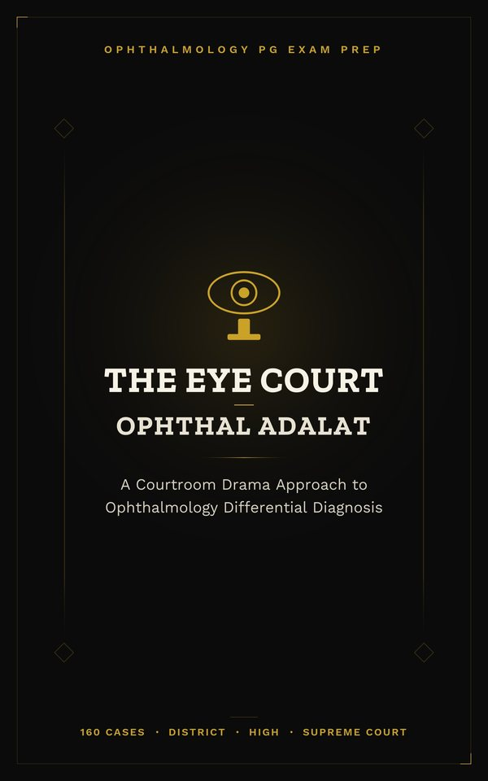

The Eye Court (Ophthal Adalat): 160 Courtroom-Style Ophthalmology Differential Diagnosis Cases (Free Sample Trial)
For: PG residents
Last updated: November 2026

Differential diagnosis is an argument between two possibilities. The Eye Court holds that argument in a courtroom. Public Prosecutor Dr Sherlock Rao argues for the diagnosis you must not miss; Defence Counsel Dr Occam Mehta argues for the common one. Each symptom, sign and test takes the witness stand and is cross-examined by both. You are the Judge.
- 160 cases across the District Court (35), High Court (62) and Supreme Court (35)
- Special formats: Double Jeopardy (8 retried misdiagnoses), Class Action Suits (13 systemic diseases) and The Appeal (7 post-operative complications)
- Every case in nine parts: FIR, opening statements, witnesses, traps, closing arguments, verdict, sentencing (management), contempt of court (common mistakes) and case law
- Every case stands on its own: open the book anywhere
Kindle edition, by Dr Dhaval Patel, MD (AIIMS). Read on any phone, tablet or computer with the free Kindle app.
Amazon links are affiliate links; Sadbhaav Eye Clinic may earn a small commission at no extra cost to you.
The cast
| The Judge | You. Every case asks you to weigh the evidence before the verdict. |
|---|---|
| Public Prosecutor, Dr Sherlock Rao | Argues the more dangerous, must-not-miss diagnosis; concedes cleanly when the evidence goes against him. |
| Defence Counsel, Dr Occam Mehta | Argues the simpler, statistically commoner diagnosis, armed with Occam’s razor. |
| The Witnesses | Symptoms, signs and investigations, each examined and cross-examined. |
| The Bailiff | Comic relief with a serious job: raising MCQ-style objections exactly when a classic distractor is most tempting. |
| The Court Recorder | Keeps the margin notes: the teaching points and one-line takeaways. |
Three courts and three special formats
- District Court (D1–D35): common, foundational differentials every PG must reason through quickly.
- High Court (H1–H62): moderate complexity, where pattern recall is not enough.
- Supreme Court (S1–S35): rare, complex and medicolegally weighted cases: the zebras and the eponymous syndromes.
- Double Jeopardy (DJ1–DJ8): a misdiagnosis, retried, showing exactly where the reasoning went wrong.
- Class Action Suits (CA1–CA13): one systemic disease, many eye findings: diabetes, hypertension, thyroid, sarcoidosis, TB, HIV, SLE and more.
- The Appeal (AP1–AP7): the patient returns after surgery, and the complication is the new case.
Free sample trial: Case D1, The Red Eye Rush
Taken from the book, slightly shortened (three of the eight witnesses are left for the book). Weigh the evidence, then open the verdict.
District Court of Ophthal Adalat · Case No. D1
The Red Eye Rush
The State vs. One Red, Painful Eye
I. The FIR (filed at Casualty, 9:40 PM)
Complainant: Mrs Kamala Devi, 52, homemaker. Sudden severe pain in the right eye since 6:30 PM, with diminished vision, right-sided headache and two episodes of vomiting. Reports “coloured rings” around the casualty tube-light for the past hour. No trauma, no previous similar episodes, no fever. BP 150/92, pulse 96, afebrile. Right eye red, watering, unable to keep it open in light. Left eye quiet.
The duty resident glances at the chart, glances at the clock and, as duty residents have done since the invention of casualties, reaches for the chloramphenicol drops. The Court will now decide if that reach was lawful.
II. Opening statements
Public Prosecutor Dr Sherlock Rao: “Your Honour. Vomiting. Halos. Headache. A red eye that arrived after dark and brought its own drama. My esteemed opponent will tell you this is ‘just conjunctivitis’. I will show you this patient’s pressure is trying to blow out her eye like an overfilled tyre. I allege acute primary angle-closure glaucoma, right eye.”
Defence Counsel Dr Occam Mehta: “A red, watering eye at night, in a patient without prior ocular history: nine times out of ten, in any casualty in this country, this is acute conjunctivitis. Before we rush this woman into a laser machine, let us actually examine her.”
The Judge (that’s you) settles in.
III. Witness examination
Witness 1: The Pain
Direct: “Severe, boring, radiating to the forehead and temple. Not the gritty, foreign-body ache of conjunctivitis: a deep, sickening pain, bad enough that the patient vomited.”
Cross: “Conjunctivitis can also cause discomfort, can it not?” “As grittiness, yes, but not pain severe enough to cause vomiting. That is the pressure talking, not the conjunctiva.”
Court Recorder’s margin note: Pain out of proportion to redness is a red flag. Conjunctivitis should never make a patient vomit.
Witness 2: The Halo Sign
Direct: “Coloured rings around lights, from corneal epithelial microcystic oedema scattering light, a direct result of acutely raised IOP overwhelming the endothelial pump.”
Cross: “Could this not simply be migraine aura? Migraine also brings visual symptoms and vomiting.”
Bailiff’s objection: “MCQ trap ahead! ‘Halos + headache + vomiting’ and the exam wants you to tick migraine. Before you do: does a migraine aura affect only ONE eye, and does it come with a RED eye?”
Court Recorder’s margin note: A red, painful eye with halos is glaucoma until proven otherwise. A quiet white eye with bilateral visual symptoms: think migraine, not angle closure.
Witness 4: The Pupil
Direct: “Mid-dilated, vertically oval, sluggish to fixed. The iris sphincter is ischaemic from the pressure.”
Cross: “A fixed pupil also occurs in third nerve palsy. How do we know this isn’t a neurological case in disguise?”
Bailiff’s objection: “Classic distractor! Check for ptosis and eye movement restriction before you call a neurologist!”
Court Recorder’s margin note: Mid-dilated fixed oval pupil + red painful eye = angle closure. Mid-dilated fixed pupil + ptosis + diplopia = look for an aneurysm, not a tonometer.
Witness 7: Intraocular Pressure, the star witness
Direct: “Digitally, the right eye feels rock-hard. On applanation: 52 mmHg right eye, 16 mmHg left eye.”
Cross: (No further questions.) The courtroom goes quiet. Even the Bailiff stops fidgeting.
Court Recorder’s margin note: If you have a tonometer within reach and are still arguing “conjunctivitis vs glaucoma”, check the pressure. This is not a difficult diagnosis; it is a delayed one.
Witness 8: Anterior Chamber Depth
Direct: “Van Herick grade 1 in the affected eye. And the LEFT eye, though quiet, is grade 2: an anatomically predisposed angle in BOTH eyes.”
Cross: The Bailiff objects to the defence not asking about the other eye: the fellow eye is always a witness, whether or not it is complaining.
Court Recorder’s margin note: Never examine only the symptomatic eye in suspected angle closure.
Witnesses 3 (the discharge), 5 (the pattern of redness) and 6 (corneal clarity) are examined in the book.
IV. Closing arguments
Defence: “Your Honour, I concede. My diagnosis explains the redness. It does not explain the pressure, the pupil, or the cornea. Occam’s razor cuts both ways.”
The Judge’s turn. Before you open the verdict: what is your diagnosis, and what are the first three things you do?
Read the verdict, the sentencing and the contempt of court
V. Verdict
The Court finds: acute primary angle-closure glaucoma, right eye, with an anatomically narrow angle; fellow eye at risk.
Reasoning chain: sudden unilateral onset → pain severe enough to cause vomiting → coloured halos from corneal oedema → ciliary (not conjunctival) flush → steamy cornea → mid-dilated, vertically oval, poorly reactive pupil → IOP 52 vs 16 mmHg → shallow anterior chamber on Van Herick in both eyes. Not a diagnosis of exclusion: a diagnosis of convergence.
VI. Sentencing: management protocol
- Analgesic and antiemetic first.
- Topical: timolol 0.5% and apraclonidine 1% or brimonidine 0.2%. Pilocarpine 2% is held while IOP is very high (the ischaemic sphincter will not respond) and added once IOP starts to fall.
- Systemic: IV mannitol 20%, 1–2 g/kg over 30–45 minutes (check cardiac and renal status), or oral glycerol; acetazolamide 500 mg stat then 250 mg four times a day (check sulfa allergy, sickle cell disease, renal function).
- Recheck IOP at 30–60 minutes.
- Once the cornea clears: Nd:YAG laser peripheral iridotomy in the affected eye.
- Prophylactic laser iridotomy in the fellow eye.
- Gonioscopy once inflammation settles; consider early lens extraction in selected patients.
VII. Contempt of court: common resident mistakes
- Prescribing a steroid–antibiotic combination for “conjunctivitis” without checking IOP.
- Reaching for pilocarpine first, before IOP has begun to fall.
- Giving acetazolamide without asking about sulfa allergy or sickle cell status.
- Sending the patient home without examining and counselling about the fellow eye.
- Blaming the vomiting on gastroenteritis and referring to medicine before an eye examination.
- Rushing to laser before the cornea is clear: treat the pressure first, laser second.
VIII. Case law
The fellow-eye precedent: an untreated narrow, occludable fellow eye carries a substantial long-term risk of an acute attack, which is why prophylactic iridotomy is standard. Van Herick’s technique (1969): the oblique slit-beam estimate of peripheral chamber depth. The lens-extraction question: large randomised trials of early clear-lens extraction have moved some practice towards earlier lens surgery in selected patients.
159 more trials are waiting in the book
From the itch trial (VKC) and the swollen disc (pseudopapilloedema) to Kennedy’s Ghost, the masquerade ball and the class action against diabetes.
Amazon links are affiliate links; Sadbhaav Eye Clinic may earn a small commission at no extra cost to you.
The full docket: all 160 cases
The case list from the book. Every case is self-contained, so you can open the book at any trial.
District Court – Common & Foundational (D1–D35) (35 cases)
- D1 The Red Eye Rush — Acute Primary Angle-Closure Glaucoma
- D2 Discharge of the Century — Viral Conjunctivitis
- D3 The Itch Trial — Vernal Keratoconjunctivitis
- D4 Lump Sum — Hordeolum
- D5 Dry Spell — Simple Evaporative Dry Eye
- D6 Growth on the Stand — Simple Pterygium (biopsy-confirmed)
- D7 The Pink Patch — Simple Pinguecula
- D8 Scratch Marks — Early Microbial Keratitis
- D9 Blood Without Pain — Subconjunctival Haemorrhage
- D10 The Squinting Child — Refractive (Accommodative) Esotropia
- D11 Cloudy Verdict — Simple Age-Related Cataract
- D12 Pressure Cooker — Ocular Hypertension
- D13 Watery Eyed Infant — Congenital Nasolacrimal Duct Obstruction
- D14 The Swollen Sac — Acute Dacryocystitis
- D15 Lid Turned Traitor — Involutional Entropion
- D16 Facing the Wrong Way — Involutional Ectropion
- D17 The Hairy Truth — Simple Trichiasis
- D18 Preseptal or Beyond? — Orbital Cellulitis
- D19 The Blurry Ledger — Simple Presbyopia
- D20 Meibomian Mysteries — Simple Anterior Blepharitis
- D21 Droopy Lid, Divided Court — Aponeurotic Ptosis
- D22 Hole in the Story — Full-Thickness Macular Hole
- D23 Two Fundi, One Complaint — Diabetic Retinopathy
- D24 The Bull’s Eye Defence — Hydroxychloroquine Maculopathy
- D25 The Steroid Trap — Steroid-Induced Glaucoma and Cataract
- D26 The Nursery Mass — Capillary Hemangioma
- D27 The Margin of Error — Marginal (Catarrhal) Keratitis
- D28 The Ruptured Verdict — Open Globe Injury
- D29 The Whitened Retina — Commotio Retinae
- D30 The False Squint — Pseudostrabismus
- D31 The Shape of the Detachment — Three-way (Rhegmatogenous / Tractional / Exudative)
- D32 The Involuntary Verdict — Essential Blepharospasm
- D33 The Pressure That Never Hurt — Primary Open-Angle Glaucoma
- D34 The Lazy Verdict — Refractive (Anisometropic) Amblyopia
- D35 The Tired Reader — Convergence Insufficiency
High Court – Moderate Complexity (H1–H62) (62 cases)
- H1 Pupil on Trial — Acute Anterior Uveitis
- H2 The Dendrite Defence — Herpes Zoster Ophthalmicus Keratitis
- H3 Fungus Among Us — Fungal Keratitis
- H4 The Contact Lens Conspiracy — Acanthamoeba Keratitis
- H5 Sudden Darkness I — Central Retinal Artery Occlusion
- H6 Flashes and Floaters — Posterior Vitreous Detachment
- H7 Painful Blindness — Non-Arteritic Anterior Ischaemic Optic Neuropathy
- H8 The Swollen Disc — Pseudopapilledema (Optic Disc Drusen)
- H9 Diabetic Disc Dilemma — Diabetic Papillopathy
- H10 Beyond the Septum — Orbital Cellulitis with Subperiosteal Abscess
- H11 Bulging Under Oath — Thyroid Eye Disease
- H12 Post-op Panic — Acute Post-Operative Endophthalmitis
- H13 The White Pupil Trial — Retinoblastoma
- H14 Cloudy From Birth — Persistent Fetal Vasculature
- H15 The Cone That Cried Wolf — Keratoconus
- H16 Recession Notice — Angle-Recession Glaucoma
- H17 Blood in the Chamber — Traumatic Hyphema with Significant Rebleed Risk
- H18 Lens Gone Rogue I — Phacomorphic Glaucoma
- H19 The Sympathizer — Vogt-Koyanagi-Harada Syndrome
- H20 Silent Artery — Giant Cell Arteritis-related Arteritic AION
- H21 Burned Judgment — Severe Alkali Chemical Injury
- H22 Nerve Without Feeling — Neurotrophic Keratitis with Exposure Component
- H23 The Vein That Bled — Branch Retinal Vein Occlusion
- H24 Vitreous on Trial — Retinal Tear-Related Vitreous Haemorrhage
- H25 Second Eye Syndrome — Compressive Optic Neuropathy
- H26 New Vessels, New Verdict — Neovascular Glaucoma
- H27 Pressure Without a Motive — Normal Tension Glaucoma
- H28 Pigment on the Record — Pseudoexfoliation Glaucoma
- H29 The Quiet Uveitis — Fuchs Heterochromic Iridocyclitis
- H30 The Larval Suspect — Ocular Toxocariasis
- H31 Young, Stressed, and Serous — Central Serous Chorioretinopathy
- H32 Dry Run or Wet Verdict — Conversion to Wet AMD
- H33 Night Court — Thioridazine-Induced Pigmentary Retinopathy
- H34 The Premature Verdict — Aggressive Posterior ROP
- H35 Third Nerve on Trial — Compressive Third Nerve Palsy (Posterior Communicating Artery Aneurysm)
- H36 The Fourth Nerve’s Alibi — Congenital (Decompensated) Trochlear Palsy
- H37 Sixth Sense, Wrong Verdict — Raised Intracranial Pressure (False-Localizing Bilateral Sixth Nerve Palsy)
- H38 The Drooping Alibi — Horner Syndrome (Third-Order)
- H39 Fatigue on the Stand — Ocular Myasthenia Gravis
- H40 Which Side Is Guilty? — Idiopathic Orbital Inflammatory Syndrome
- H41 The Pigmented Plea — Suspected Conjunctival Melanoma
- H42 Ethambutol’s Defence — Nutritional/Toxic (Tobacco-Alcohol) Optic Neuropathy
- H43 The Impostor Pressure — Posner-Schlossman Syndrome
- H44 The Tightening Orbit — Orbital Compartment Syndrome (Retrobulbar Haemorrhage)
- H45 The Alternating Plaintiff — HLA-B27-associated Acute Anterior Uveitis
- H46 The Silent Nerve — Traumatic Optic Neuropathy
- H47 The Unresponsive Iridotomy — Plateau Iris Syndrome
- H48 The Quiet Child’s Eye — JIA-associated Chronic Anterior Uveitis
- H49 The Source Within — Endogenous Endophthalmitis
- H50 The Treatment’s Own Trap — Steroid-Induced Glaucoma (complicating uveitis)
- H51 The Sudden Bloom — Retinal Arterial Macroaneurysm
- H52 The Thinning Trio — Pellucid Marginal Degeneration
- H53 The Retreating Eye — Duane Retraction Syndrome
- H54 The Visual Warning — Migraine with Aura
- H55 The Pupil That Won’t Look at the Light — Argyll Robertson Pupil / Adie’s Tonic Pupil
- H56 The Deceptively Quiet Fracture — White-Eyed Blowout Fracture with Entrapment
- H57 The Masquerading Lump — Sebaceous Gland Carcinoma
- H58 The Blood From Elsewhere — Terson Syndrome / Valsalva Retinopathy
- H59 The Half-missing World — Congruous (Occipital) / Incongruous (Optic Tract) Homonymous Hemianopia
- H60 The Eye That Won’t Look Up and in — Brown Syndrome
- H61 The Membrane’s Own Verdict — Idiopathic Epiretinal Membrane
- H62 The Infection That Won’t Admit It’s One — Microsporidial Keratoconjunctivitis
Supreme Court – Rare, Complex & Medicolegal (S1–S35) (35 cases)
- S1 The Enucleation Question — Enucleation Indicated
- S2 Bilateral Betrayal — VKH Syndrome
- S3 Susac’s Riddle — Susac Syndrome
- S4 Shaken, Not Accidental — Pattern Highly Associated with Abusive Head Trauma — Multidisciplinary Referral Indicated
- S5 The Carotid Conspiracy — Ocular Ischaemic Syndrome
- S6 Masquerade Ball — Primary Vitreoretinal Lymphoma
- S7 Purtscher’s Alibi — Acute Exacerbation of Diabetic Retinopathy
- S8 Kennedy’s Ghost — Foster Kennedy Syndrome
- S9 Drunk on the Wrong Spirit — Methanol Optic Neuropathy
- S10 Behind the Apex — Orbital Apex Syndrome (Suspected Mucormycosis)
- S11 The Ataxic Eye — Miller Fisher Syndrome
- S12 Behcet’s Bench — Behçet’s Disease Uveitis
- S13 The Trilateral Trap — Suspected Trilateral Retinoblastoma
- S14 Consent on Trial — Teaching Case on Screening Standards and Informed Consent (No Legal Liability Determination Rendered)
- S15 The Cluster Outbreak — Confirmed Contaminated-Supply Cluster Outbreak
- S16 Wrong Eye, Wrong Lens — Teaching Case on Preventable Systemic Surgical Error
- S17 The Glial Growth — Optic Nerve Glioma (NF1-associated)
- S18 Necrosis in the Dark — Acute Retinal Necrosis (VZV)
- S19 The Vasculitis Verdict — SLE-associated Retinal Vasculopathy
- S20 Granuloma’s Alibi — Ocular Tuberculosis
- S21 The Misdirected Aqueous — Malignant Glaucoma
- S22 The Disconnected Gaze — Internuclear Ophthalmoplegia (Multiple Sclerosis)
- S23 The Pigmented Verdict — Choroidal Melanoma
- S24 The Child’s Hidden Malignancy — Orbital Rhabdomyosarcoma
- S25 The Inherited Darkness — Leber Hereditary Optic Neuropathy
- S26 The Antibody’s Verdict — MOG-Antibody-Associated Disease
- S27 The Polypoidal Defence — Polypoidal Choroidal Vasculopathy
- S28 The Lens That Turned on Itself — Phacoanaphylactic Uveitis (with possible coexisting Sympathetic Ophthalmia)
- S29 The White Dot Verdict — APMPPE
- S30 The Pulsing Proptosis — Direct Carotid-Cavernous Fistula
- S31 The Three Suspects — Orbital Lymphoma
- S32 The Unwitnessed Blindness — Functional (Non-Organic) Visual Loss
- S33 The Two Roads to the Same Keratitis — Congenital Syphilis / Cogan’s Syndrome
- S34 The Gland’s Three Faces — Pleomorphic Adenoma / Adenoid Cystic Carcinoma / Acute Dacryoadenitis
- S35 The Final Pigment — Benign Iris Nevus
Double Jeopardy (DJ1–DJ8) (8 cases)
- DJ1 Double Jeopardy: the Red Eye, Reconsidered
- DJ2 Double Jeopardy: the Headache, Reconsidered
- DJ3 Double Jeopardy: the Lid Swelling, Reconsidered
- DJ4 Double Jeopardy: the Itchy Eye, Reconsidered
- DJ5 Double Jeopardy: the Dry Eye, Reconsidered
- DJ6 Double Jeopardy: the Hyphema, Reconsidered
- DJ7 Double Jeopardy: the Watery Eyes, Reconsidered
- DJ8 Double Jeopardy: the Uveitis, Reconsidered
Class Action Suits (CA1–CA13) (13 cases)
- CA1 The Diabetes Class Action
- CA2 The Hypertension Class Action
- CA3 The Thyroid Eye Disease Class Action
- CA4 The Sarcoidosis Class Action
- CA5 The Tuberculosis Class Action
- CA6 The HIV/AIDS Class Action
- CA7 The Rheumatoid Arthritis Class Action
- CA8 The SLE Class Action
- CA9 The GPA (Wegener’s) Class Action
- CA10 The Marfan Syndrome Class Action
- CA11 The Neurofibromatosis Type 1 Class Action
- CA12 The Down Syndrome Class Action
- CA13 The Vitamin A Deficiency Class Action
The Appeal (AP1–AP7) (7 cases)
- AP1 The Appeal: Post-cataract Surgery — Pseudophakic CME
- AP2 The Appeal: Post-trabeculectomy — Failing Bleb (Fibrosis)
- AP3 The Appeal: Post-retinal Detachment Surgery — PVR-related Redetachment (Grade C)
- AP4 The Appeal: Post-penetrating Keratoplasty — Endothelial Graft Rejection
- AP5 The Appeal: Post-LASIK — Diffuse Lamellar Keratitis (Stage 2)
- AP6 The Appeal: Post-strabismus Surgery — Slipped Medial Rectus Muscle
- AP7 The Appeal: Post-orbital Fracture Repair — Residual Inferior Rectus Entrapment
Practise the same reasoning free on the site: Spot the diagnosis, Viva Hot Seat and OSCE spot stations.
Frequently asked questions
Who is The Eye Court for?
Ophthalmology PG residents and exam candidates (MS, DNB, FICO, FRCOphth and similar) who know the facts but want to get better at choosing between two close diagnoses under pressure.
How does the courtroom format help?
Every finding is examined twice, once by each side, so you learn what a sign really proves and what it does not. The Bailiff raises the classic MCQ distractors at the exact moment they are most tempting.
Does the dangerous diagnosis always win?
No. Verdicts are split close to evenly, so “who is arguing for what” is never a shortcut to the answer. That is deliberate.
What are Double Jeopardy, Class Action Suits and The Appeal?
Double Jeopardy retries a misdiagnosis to show where the reasoning failed; Class Action Suits try several eye manifestations of one systemic disease together; The Appeal follows patients back after surgery, when a complication becomes the new case.
Can I read a full case first?
Yes: case D1, The Red Eye Rush, is on this page.
Other books that teach the same way


Compare all four in Learn ophthalmology differently, or see all books by Dr Dhaval Patel and the exam book chooser.
Revise with flip cards
Key sources
- Patel D. The Eye Court – Ophthal Adalat: A courtroom drama approach to ophthalmology differential diagnosis. Kindle edition, 2026. ASIN B0HKHK1PW2.
📘 Want the exam-ready deep dive? This topic, and much more is covered in Ophthalmology Explorer (A High-Yield Clinical Reference for Ophthalmology Residents, Fellows & Board Exams) — available on Kindle. See all my books.
How to cite this page
Patel D. The Eye Court (Ophthal Adalat): 160 Courtroom-Style Ophthalmology Differential Diagnosis Cases (Free Sample Trial). RPC Rounds (Sadbhaav Eye Clinic). Updated November 2026. Available at: https://www.sadbhaavclinic.com/eye-court-ophthal-adalat.html. Accessed [date].
Want to know more about treatment? Read about all books by Dr Dhaval Patel or book a consultation with Dr. Dhaval Patel.